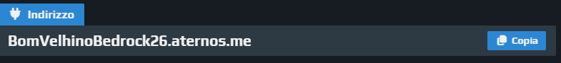
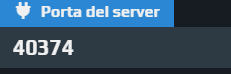
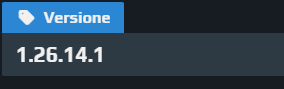

Como entrar no Servidor
Siga os passos abaixo. O servidor é hospedado no Aternos.
IP:BomVelhinoBedrock26.aternos.me
Porta:40374
Versão:1.26.14.1
TUTORIAIS
Aprenda a configurar e entrar no nosso servidor do Aternos
Como colocar o IP e Porta
Neste vídeo você aprende onde copiar o endereço do Aternos e como colar dentro do seu Minecraft para não dar erro de conexão.
Galeria de Fotos


